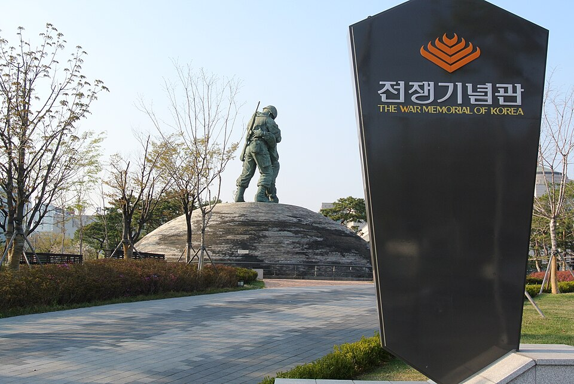

Các địa điểm Seoul lên sóng truyền hình: Lotte World Tower cao 541m và Bảo tàng Chiến tranh Hàn Quốc
Hai địa điểm ở Seoul từng xuất hiện trong chương trình 'Chào mừng, lần đầu đến Hàn Quốc?': hoạt động leo cầu thang ngoài trời ở độ cao 541m của Lotte World Tower, và Bảo tàng Chiến tranh Hàn Quốc, nơi trưng bày lịch sử chiến tranh và sự chia cắt của đất nước.
Xem Seoul qua màn hình trước
Seoul là thủ đô của Hàn Quốc, nơi hội tụ cung điện cổ, chợ truyền thống, sông Hán và cảnh đêm lung linh. Bài viết này giới thiệu hai địa điểm ở Seoul đã xuất hiện trong chương trình truyền hình Hàn Quốc Chào mừng, lần đầu đến Hàn Quốc? (어서와 한국은 처음이지), nơi du khách nước ngoài khám phá đất nước. Một bên là trải nghiệm mạo hiểm ở độ cao lớn, bên kia là không gian yên tĩnh để suy ngẫm, nên hai địa điểm này tạo nên một cặp đối lập thú vị.
Lotte World Tower

📍 Lotte World Tower · Naver Map · Google Maps
Tại tòa nhà chọc trời này, bạn có thể thử hoạt động leo cầu thang ngoài trời ở độ cao 541m so với mặt đất. Thay vì chỉ nhìn ra ngoài qua lớp kính, đây là cách để thực sự cảm nhận độ cao. Tòa tháp được giới thiệu trong tập EP.186-3, "Hoạt động tại tòa nhà chọc trời Lotte World Tower – cao 541m so với mặt đất". Nếu bạn chưa chắc mình có chịu được độ cao hay không, xem trước tập phim này là cách hay để hình dung trải nghiệm.
Bảo tàng Chiến tranh Hàn Quốc

📍 Bảo tàng Chiến tranh Hàn Quốc · Naver Map · Google Maps
Bảo tàng Chiến tranh Hàn Quốc trưng bày các hiện vật về lịch sử chiến tranh và sự chia cắt bán đảo Triều Tiên. Với du khách lần đầu đến, đây là phần kiến thức nền hữu ích để hiểu Hàn Quốc ngày nay. Trong tập EP.95-3, "Những người bạn Canada đối diện với thực tại chia cắt tại Bảo tàng Chiến tranh", một nhóm bạn người Canada đến thăm và đối diện với thực tế về sự chia cắt của Hàn Quốc.
Gợi ý lộ trình
Vì hai địa điểm này rất khác nhau về không khí, nên nếu tham quan cả hai trong cùng một ngày, bạn nên lên kế hoạch thứ tự. Một gợi ý là đến Bảo tàng Chiến tranh vào ban ngày, khi bạn có thể thong thả xem các hiện vật, rồi đến Lotte World Tower sau đó để tiếp tục ngắm cảnh đêm Seoul. Hãy dành đủ thời gian cho mỗi nơi. Về ẩm thực, bạn có thể thử các món quen thuộc ở Seoul như samgyeopsal (thịt ba chỉ nướng) hoặc gopchang (lòng non nướng). Nếu còn một ngày rảnh, chợ Gwangjang với bindaetteok (bánh đậu xanh) và yukhoe (thịt bò tươi trộn kiểu Hàn) hoặc mì ramyeon hải sản ở Noryangjin đáng để dành riêng một chuyến đi.
Quán ăn & địa điểm trong video
- Lotte World Tower (롯데타워) (롯데타워) Hoạt động leo cầu thang ngoài trời ở độ cao 541m so với mặt đất tại tòa nhà chọc trời Naver Map Google Maps
- Bảo tàng Chiến tranh Hàn Quốc (전쟁기념관) (전쟁기념관) Trưng bày về lịch sử chiến tranh Hàn Quốc và sự chia cắt đất nước Naver Map Google Maps
Vị trí và giờ mở cửa có thể thay đổi, hãy kiểm tra bản đồ trước khi đi.
Video liên quan


Bài viết khác
- Jeonnam trên màn ảnh: Cáp treo vượt biển Yeosu và đảo Odongdo
- Hướng dẫn ẩm thực Jeollanam-do: cua đá Yeosu, hải sản Mokpo và bàn ăn Gwangju qua các chương trình ẩm thực Hàn Quốc
- Hướng dẫn ăn vặt và chợ ở Seoul: nên ăn gì ở chợ Gwangjang, chợ hải sản Noryangjin và hơn thế nữa (theo video ẩm thực)
- Hướng dẫn làm đẹp Seoul: Mua sắm Olive Young ở Myeongdong và Seongsu, phòng khám da liễu và liệu pháp làm đẹp
- Hướng dẫn ẩm thực Hàn Quốc theo vùng: Nên ăn gì ở Seoul, Busan, Jeju, Mokpo, Daegu, Jeonju và nhiều nơi khác (Tổng hợp từ video mukbang và ẩm thực nổi tiếng trên YouTube)
- Hướng dẫn ẩm thực Jeonju: Bibimbap, đồ ăn đường phố làng Hanok, chợ đêm Nambu và Tteokgalbi Gunsan (từ video du lịch)